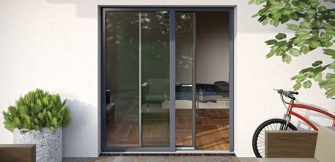

Puertas Correderas
Nuestro programa incluye tres variantes de correderas con las que podemos satisfacer sus deseos de comodidad. La puerta corredera elevadora, con su gran superficie acristalada, es ideal para grandes aberturas. Por su parte, la puerta corredera paralela de Aluminios Jutosa ofrece la mejor hermeticidad a un precio muy atractivo.
La ventana corredera Easy-Slide, elegante y moderna, resulta especialmente adecuada para hojas de ancho intermedio. Sea cual sea su elección, todas nuestras soluciones de correderas combinan la mejor tecnología con la máxima comodidad de utilización.